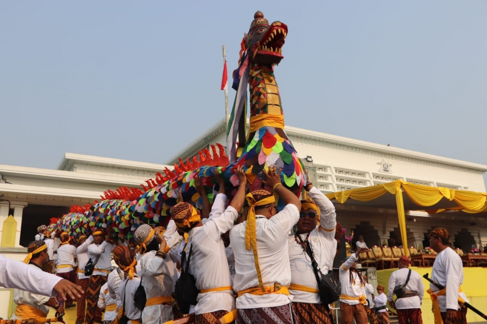
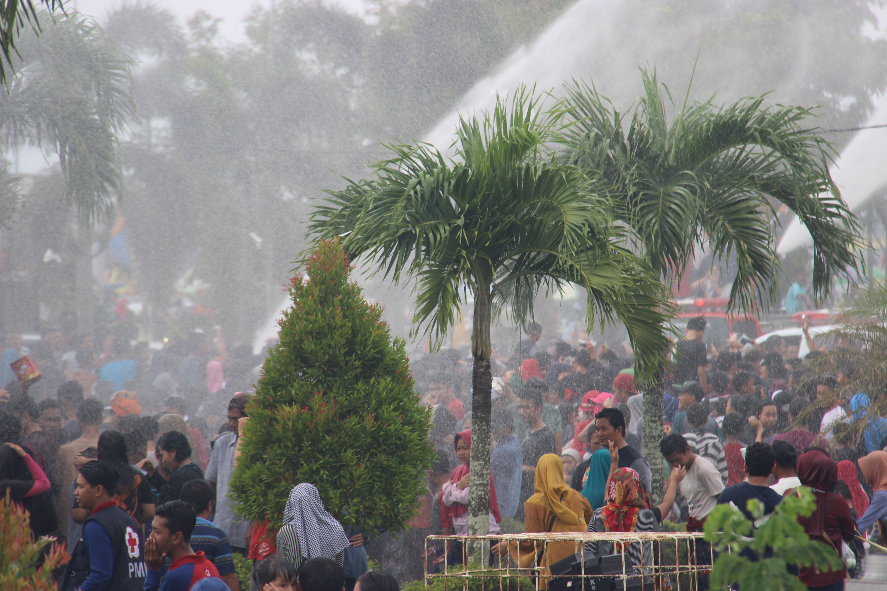

WONDERSKUTAI
THE MIRACLE OF KUTAI

Festival Budaya Erau
Festival budaya Erau merupakan sebuah wisata budaya yang melegenda dari Kutai Kartanegara. Festival tersebut telah diselenggarakan sejak zaman dahulu dan masih dilestarikan sampai sekarang.

TIFAF
TIFAF (Tenggarong International Folk & Arts Festival) adalah festival yang menampilkan kesenian, lokal, regional, nasional, dan internasional.

Tradisi Belimbur
Belimbur merupakan tradisi saling menyiramkan air kepada sesama masyarakat di sepanjang jalan yang dilaksanakan pada penutup Erau. Maksud dari tradisi ini ialah sebagai sarana untuk membersihkan diri dari semua bentuk kejahatan.